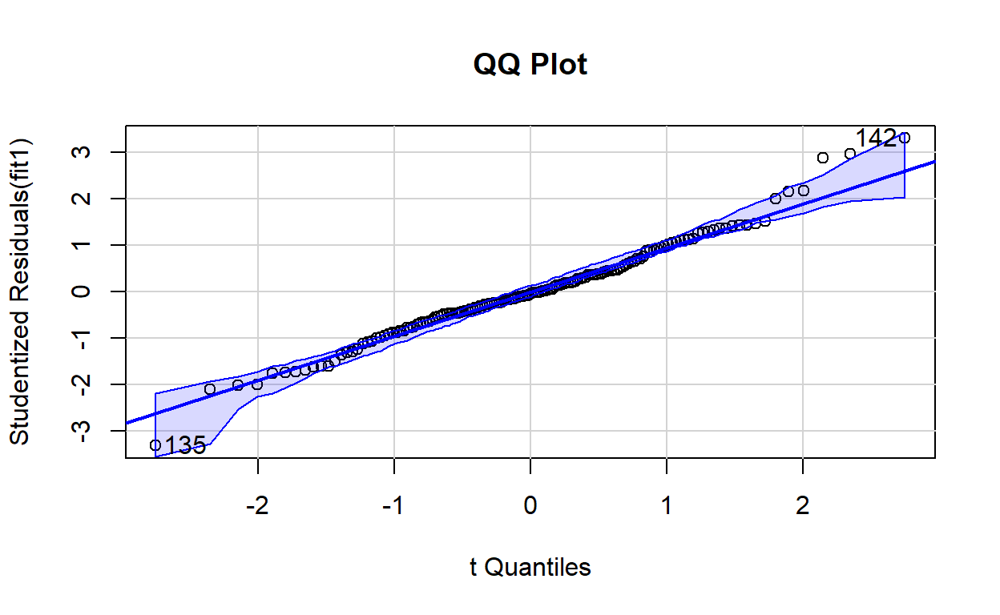
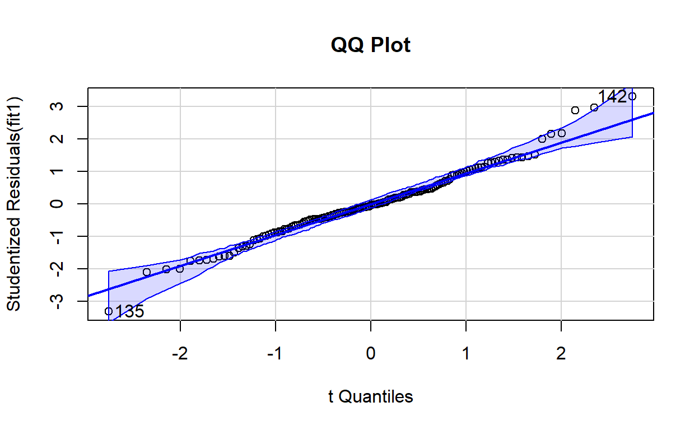

library(Hmisc)
library(corrplot)
library(MASS)
library(car)
library(interactions)
library(yarrr)
library(tidyr)
library(readr)
library(lme4)
library (lmerTest)
library(nlme)
library(ggplot2)
library(gvlma)
library(simpleboot)
library(DAAG)
library(bootstrap)
library(MBESS)
library(leaps)
library(sandwich)
library(dplyr)In the coming two weeks, we will take some time on basic concepts behind some simple linear models.
Linear regression
Definition
Lets start with a a simple correlation among two variables:
# correlation
rairuoho<-read.table('https://www.dipintothereef.com/uploads/3/7/3/5/37359245/rairuoho.txt',header=T, sep="\t", dec=".")
cor.test(rairuoho$day6, rairuoho$day7)
Pearson's product-moment correlation
data: rairuoho$day6 and rairuoho$day7
t = 9.562, df = 46, p-value = 1.658e-12
alternative hypothesis: true correlation is not equal to 0
95 percent confidence interval:
0.6918585 0.8928613
sample estimates:
cor
0.8156516 We can repeat it for all days by building a Pearson coefficient matrix:
corr<-cor(rairuoho[,1:6])
corr # cor.test does not work on Matrix day3 day4 day5 day6 day7 day8
day3 1.0000000 0.7669682 0.5994600 0.5464308 0.3558050 0.2255945
day4 0.7669682 1.0000000 0.7692091 0.7943134 0.6027304 0.4544520
day5 0.5994600 0.7692091 1.0000000 0.7524457 0.5541184 0.4053586
day6 0.5464308 0.7943134 0.7524457 1.0000000 0.8156516 0.6754468
day7 0.3558050 0.6027304 0.5541184 0.8156516 1.0000000 0.8398937
day8 0.2255945 0.4544520 0.4053586 0.6754468 0.8398937 1.0000000Which however doesnt give us the p-values of those correlations. Many packages offer a better visualization of this matrix, such as corrplot:
Previously, we saw that this type of relationship (a linear model lm) between two variables can be added to a scatterplot using the function abline
# remember `ggplot`
# ggplot(rairuoho, aes(x = day6, y = day7)) +
# geom_point() +
# stat_smooth(method = "lm", col = "red")Indeed our correlation derived from a simple linear regression. In Model I regression (indeed we have Model II when two variable in the regression equation are random , i.e.no controlled by the researcher), it is used to predict a quantitative outcome of a dependent variable \(y\) on the basis of one single independent predictor variable \(x\). The goal is to build a mathematical model (or formula) that defines \(y\) as a function of the \(x\) variable.
Once, we built a statistically significant model, its possible to use it for predicting future outcome on the basis of new \(x\) values.
Formula and basics
The formula of linear regression can be written as follows: \[ y = \beta_0 + \beta_1*x + \epsilon \]
where:
\(\beta_0\) and \(\beta_1\) are known as the regression beta coefficients or parameters:
- \(\beta_0\) is the intercept of the regression line; that is the predicted value when x = 0.
- \(\beta1\) is the slope of the regression line.
\(\epsilon\) is the error term (also known as the residual errors)
The figure below illustrates the linear regression model, where:
- the best-fit regression line is in blue
- the intercept (\(\beta_0\)) and the slope (\(\beta_1\)) are shown in green
- the error terms (\(\epsilon\)) are represented by vertical red lines

From the figure above, it can be seen that not all the data points fall exactly on the fitted regression line. Some of the points are above the blue curve and some are below it; overall, the residual errors (\(\epsilon\)) have approximately mean zero.
TERMINOLOGY ALERT
The sum of the squares of the residual errors are called the Residual Sum of Squares or RSS.
The average variation of points around the fitted regression line is called the Residual Standard Error (RSE). This is one the metrics used to evaluate the overall quality of the fitted regression model. The lower the RSE, the better it is.
Since the mean error term is zero, the outcome variable y can be approximately estimated as follow:
\[y= \beta_0+\beta_1*x\]
Mathematically, the beta coefficients (\(\beta_0\) and \(\beta_1\)) are determined so that the RSS is as minimal as possible. This method of determining the beta coefficients is technically called least squares regression or ordinary least squares (OLS) regression.
Once, the beta coefficients are calculated, a t-test is performed to check whether or not these coefficients are significantly different from zero. A non-zero beta coefficients means that there is a significant relationship between the predictors (\(x\)) and the outcome variable (\(y\)).
Computation
Finally! The simple linear regression tries to find the best line to predict \(y\) on the basis of \(x\).
In the iris data set, a linear model equation can be written as follow:
\(Petal.Width = \beta_0 + \beta_1 * Petal.Length\)
In R language, it is translated using the function lm and in order to determine the beta coefficients of the linear model:
model1 <- lm(Petal.Width ~ Petal.Length, data = iris)
model1$coefficients (Intercept) Petal.Length
-0.3630755 0.4157554 The results show the intercept (\(\beta_0\)) and the slope (\(\beta_1\)), i.e.the beta coefficients for the Petal.Length variable
ggplot(iris, aes(x = Petal.Length, y = Petal.Width)) +
geom_point(aes(fill=Species),shape = 21, size=5) +
stat_smooth(method = "lm", col = "blue")Interpretation
From the output above:
the estimated regression line equation can be written as follow: \(Petal.Width = -0.3631 + 0.4158*Petal.Length\)
the intercept (\(\beta_0\)) is \(-0.3631\). It can be interpreted as the predicted width of petal for a length of petal equal to zero. Regression through the origin is when you force the intercept of a regression model to equal zero. Its also known as fitting a model without an intercept (e.g., the intercept-free linear model \(y = \beta_1*x\) is equivalent to the model \(y = \beta_0 + \beta_1*x\) with \(\beta_0=0\)). Knowing that the true relationship between your predictors and the expected value of your dependent variable has to pass through the origin would be a good reason for forcing the estimated relationship through the origin if you knew for certain what the true relationship was (be careful very rare cases where it is justified to remove the intercept).
the regression beta coefficient for the variable
Petal.Length(\(\beta1\)), also known as the slope, is \(0.4158\). This means that, for one unit of \(Petal.Length\), we can expect an increase of \(0.4158\) units in \(Petal.Width\).
Model assessment
Before using our model to predict \(Petal.Width\), we should make sure that this model is statistically significant, that is:
there is a statistically significant relationship between the predictor and the outcome variables
the model that we built fits very well the data in our hand.
Model summary
Using our lm model, we get a bit more than just the coefficient (\(\beta0\)) and (\(\beta1\))
summary(model1)
Call:
lm(formula = Petal.Width ~ Petal.Length, data = iris)
Residuals:
Min 1Q Median 3Q Max
-0.56515 -0.12358 -0.01898 0.13288 0.64272
Coefficients:
Estimate Std. Error t value Pr(>|t|)
(Intercept) -0.363076 0.039762 -9.131 4.7e-16 ***
Petal.Length 0.415755 0.009582 43.387 < 2e-16 ***
---
Signif. codes: 0 '***' 0.001 '**' 0.01 '*' 0.05 '.' 0.1 ' ' 1
Residual standard error: 0.2065 on 148 degrees of freedom
Multiple R-squared: 0.9271, Adjusted R-squared: 0.9266
F-statistic: 1882 on 1 and 148 DF, p-value: < 2.2e-16Looking at only the p-values, this simple model seems to fit the data very well. But the output tells us much more. The summary outputs shows 6 components, including:
- Call shows the function call used to compute the regression model.
- Residuals provide a quick view of the distribution of the residuals, which by definition have a mean zero. Therefore, the median should not be far from zero, and the minimum and maximum should be roughly equal in absolute value.
- Coefficients shows the regression beta coefficients and their statistical significance. Predictor variables, that are significantly associated to the outcome variable, are marked by stars.
- Residual standard error (RSE), R-squared (R2) and the F-statistic are metrics that are used to check how well the model fits to our data.
Coefficients significance
The coefficients table, in the model statistical summary, shows:
- the estimates of the beta coefficients
- the standard errors (SE), which defines the accuracy of beta coefficients. For a given beta coefficient, the SE reflects how the coefficient varies under repeated sampling. It can be used to compute the confidence intervals and the t-statistic.
- the t-statistic and the associated p-value, which defines the statistical significance of the beta coefficients.
t-statistic and p-values
For a given predictor, the t-statistic (and its associated p-value) tests whether or not there is a statistically significant relationship between a given predictor and the outcome variable, that is whether or not the beta coefficient of the predictor is significantly different from zero.
The statistical hypotheses are as follow:
- Null hypothesis (H0): the coefficients are equal to zero (i.e., no relationship between x and y)
- Alternative Hypothesis (H1): the coefficients are not equal to zero (i.e., there is some relationship between \(x\) and \(y\))
Mathematically, for a given beta coefficient (\(\beta\)), the t-test is computed as \(t = (\beta - 0)/SE(\beta)\), where \(SE(\beta)\) is the SE of the coefficient \(\beta\). Simply said, the t-statistic measures the number of standard deviations that \(\beta\) is away from 0. Thus a large t-statistic will produce a small p-value (=different).
The higher the t-statistic (and the lower the p-value), the more significant the predictor. The symbols to the right (***) visually specifies the level of significance. The line below the table shows the definition of these symbols; one star means 0.01 < p < 0.05. The more the stars beside the variables p-value, the more significant the variable.
A statistically significant coefficient indicates that there is an association between the predictor (\(x\)) and the outcome (\(y\)) variable.
The t-statistic is a very useful guide for whether or not to include a predictor in a model. High t-statistics (which go with low p-values near 0) indicate that a predictor should be retained in a model, while very low t-statistics indicate a predictor could be dropped (Bruce and Bruce 2017).
Standard errors and confidence intervals
The standard error measures the variability/accuracy of the beta coefficients. It can be used to compute the confidence intervals of the coefficients.
For example, the 95% confidence interval for the coefficient \(\beta1\) is defined as \(\beta1 +/- 2*SE(\beta1)\), where:
the lower limits of \(\beta_1 = \beta_1 - 2*SE(\beta_1) = 0.415 - 2*0.009 = 0.397\)
the upper limits of \(\beta1 = \beta1 + 2*SE(\beta1) = 0.415 + 2*0.009 = 0.435\)
That is, there is approximately a 95% chance that the interval [0.397, 0.435] will contain the true value of \(\beta1\). Similarly the 95% confidence interval for \(\beta0\) can be computed as \(\beta0 +/- 2*SE(\beta0)\).
To get this information, either you calculate by hands or you simply call:
confint(model1) 2.5 % 97.5 %
(Intercept) -0.4416501 -0.2845010
Petal.Length 0.3968193 0.4346915Model accuracy
Once you identified that, at least, one predictor variable is significantly associated the outcome, you should continue the diagnostic by checking how well the model fits the data. This process is also referred to as the goodness-of-fit
The overall quality of the linear regression fit can be assessed using the following three parameters, displayed in the model summary:
- The Residual Standard Error (RSE)
The RSE (also known as the model sigma) is the residual variation, representing the average variation of the observations points around the fitted regression line. This is the standard deviation of residual errors.
RSE provides an absolute measure of patterns in the data that cant be explained by the model. When comparing two models, the model with the small RSE is a good indication that this model fits the best the data.
Dividing the RSE by the average value of the outcome variable will give you the prediction error rate, which should be as small as possible.
In our example, RSE = 0.2065, meaning that the observed Petal.width values deviate from the true regression line by approximately 0.2065 units in average.
Whether or not an RSE of 0.2065 units is an acceptable prediction error is subjective and depends on the problem context. However, we can calculate the percentage error. In our data set, the mean value of Petal.Width is 1.1993, and so the percentage error is 0.2065/1.1993 = 17%.
- The R-squared (\(R^2\))
The R-squared \(R^2\) ranges from 0 to 1 and represents the proportion of information (i.e.variation) in the data that can be explained by the model. The adjusted \(R^2\) adjusts \(R^2\) with the degrees of freedom.
The \(R^2\) measures, how well the model fits the data. For a simple linear regression, \(R^2\) is the square of the Pearson correlation coefficient.
A high value of \(R^2\) is a good indication. However, as the value of \(R^2\) tends to increase when more predictors are added in the model, such as in multiple linear regression model, you should mainly consider the adjusted \(R^2\)**, which is a penalized \(R^2\) for a higher number of predictors.
An (adjusted) \(R^2\) that is close to 1 indicates that a large proportion of the variability in the outcome has been explained by the regression model.
A number near 0 indicates that the regression model did not explain much of the variability in the outcome.
- F-statistic
The F-statistic gives the overall significance of the model. It assess whether at least one predictor variable has a non-zero coefficient.
In a simple linear regression, this test is not really interesting since it just duplicates the information in given by the t-test, available in the coefficient table. In fact, the F-test is identical to the square of the t-test: \(1882 = (43.387)^2\). That would be true in any model with 1 degree of freedom.
The F-statistic becomes more important once we start using multiple predictors as in multiple linear regression.
A large F-statistic will corresponds to a statistically significant p-value (p < 0.05). In our example, the F-statistic equal 1882 producing a p-value of < 2.2e-16, which is highly significant.
Multiple regression
Multiple linear regression is just an extension of simple linear regression used to predict an outcome variable (\(y\)) on the basis of multiple distinct predictor variables (\(x\)).
With three predictor variables (\(x\)), the prediction of \(y\) is expressed by the following equation:
\[y = \beta_0 + \beta_1*x_1 + \beta_2*x_2 + \beta_3*x_3\]
The \(\beta\) values are called the regression weights (or beta coefficients). They measure the association between the predictor variable and the outcome. \(\beta_j\) can be interpreted as the average effect on \(y\) of a one unit increase in \(x_j\), holding all other predictors fixed.
Fitting the model
R provides comprehensive support for multiple linear regression. We want to build a model for estimating Petal.Width based on data we get on Petal.Length, Sepal.Length, and Sepal.Width.
\[Petal.Width = \beta_0 + \beta_1*Petal.Length + \beta_2*Sepal.Length + \beta_3*Sepal.Width\] You can now easily compute this in R as follow:
Call:
lm(formula = Petal.Width ~ Petal.Length + Sepal.Width + Sepal.Length,
data = iris)
Residuals:
Min 1Q Median 3Q Max
-0.60959 -0.10134 -0.01089 0.09825 0.60685
Coefficients:
Estimate Std. Error t value Pr(>|t|)
(Intercept) -0.24031 0.17837 -1.347 0.18
Petal.Length 0.52408 0.02449 21.399 < 2e-16 ***
Sepal.Width 0.22283 0.04894 4.553 1.10e-05 ***
Sepal.Length -0.20727 0.04751 -4.363 2.41e-05 ***
---
Signif. codes: 0 '***' 0.001 '**' 0.01 '*' 0.05 '.' 0.1 ' ' 1
Residual standard error: 0.192 on 146 degrees of freedom
Multiple R-squared: 0.9379, Adjusted R-squared: 0.9366
F-statistic: 734.4 on 3 and 146 DF, p-value: < 2.2e-16Regression diagnostics
See here for functions and packages
Diagnostic plots
Diagnostic plots provide checks for heteroscedasticity, normality, and influential observations.
- Residuals vs.fitted plot.
This plot serves mainly to check the linearity, although lack of homoscedasticity or independence can also be detected. Under linearity, we expect the red line (a nonlinear fit of the mean of the residuals) to be almost flat. This means that the trend of \(Y_1,...,Y_n\) is linear with respect to the predictors. Heteroscedasticity can be detected also in the form of irregular vertical dispersion around the red line. The dependence between residuals can be detected (harder) in the form of non randomly spread residuals.
- Normal Q-Q plot. Check the normality
Under normality, we expect the points (sample quantiles of the standardized residuals vs.theoretical quantiles of a \(N(0,1)\) to align with the diagonal line, which represents the ideal position of the points if those were sampled from a \(N(0,1)\). It is usual to have larger departures from the diagonal in the extremes than in the center, even under normality, although these departures are more clear if the data is non-normal.
- Scale-location plot.
Serves for checking the homoscedasticity. It is similar to the first diagnostic plot, but now with the residuals standardized and transformed by a square root (of the absolute value). This change transforms the task of spotting heteroskedasticity by looking into irregular vertical dispersion patterns into spotting for nonlinearities, which is somehow simpler. Under homoscedasticity, we expect the red line to be almost flat. If there are consistent nonlinear patterns, then there is evidence of heteroscedasticity.
- Residuals versus Leverage to detect outlier and check for the normality. On this plot, you want to see that the red smoothed line stays close to the horizontal gray dashed line and that no points have a large Cooks distance (i.e, >0.5).
Outliers
# Assessing Outliers
outlierTest(fit1) # Bonferonni p-value for most extreme obsNo Studentized residuals with Bonferroni p < 0.05
Largest |rstudent|:
rstudent unadjusted p-value Bonferroni p
135 -3.323084 0.0011271 0.16907qqPlot(fit1, main="QQ Plot") #qq plot for studentized resid
[1] 135 142leveragePlots(fit1) # leverage plotsInfluential observations
# Influential Observations
# added variable plots
avPlots(fit1)# Cook's D plot
# identify D values > 4/(n-k-1)
cutoff <- 4/((nrow(iris)-length(fit1$coefficients)-2))
plot(fit1, which=4, cook.levels=cutoff)# Influence Plot
influencePlot(fit1, id.method="identify", main="Influence Plot", sub="Circle size is proportial to Cook's Distance" ) StudRes Hat CookD
107 0.218388 0.07440127 0.0009647108
132 -1.763159 0.07518199 0.0622805793
135 -3.323084 0.02404521 0.0636400285
142 3.302796 0.02171837 0.0566956801Non-normality
# Normality of Residuals
# qq plot for studentized resid
qqPlot(fit1, main="QQ Plot")
[1] 135 142Non-constant Error Variance
# Evaluate homoscedasticity
# non-constant error variance test
ncvTest(fit1)Non-constant Variance Score Test
Variance formula: ~ fitted.values
Chisquare = 25.96744, Df = 1, p = 3.4722e-07# plot studentized residuals vs. fitted values
spreadLevelPlot(fit1)
Suggested power transformation: 0.6773452 Multi-collinearity
A common problem that arises in multiple linear regression is the multi-collinearity. This is the situation when two or more predictors are highly linearly related between them. Multicollinearitiy has important effects on the fit of the model:
It reduces the precision of the estimates. As a consequence, signs of fitted coefficients may be reversed and valuable predictors may appear as non significant.
It is difficult to determine how each of the highly related predictors affects the response, since one masks the other. This may result in numerical instabilities.
An approach is to detect multicollinearity is to compute a correlation matrix between the predictors as we learned earlier
Here we can see what we already knew that Sepal.Length and Petal.Length are highly linearly related. One could be removed. However, it is not enough to inspect pair by pair correlations in order to get rid of multicollinearity.A better approach is to compute the Variance Inflation Factor (VIF) of each coefficient \(\beta_j\). This is measure of how linearly dependent is \(X_j\) with the rest of predictors:
\[\text{VIF}(\beta_j)=\frac{1}{1-R^2_{X_j|X_{-j}}}\]
where \(R^2_{X_j|X_{-j}}\) is the \(R^2\) from a regression of \(X_j\) into the remaining predictors. The next rule of thumb gives direct insight into which predictors are multicollinear:
- VIF close to 1: absence of multicollinearity.
- VIF larger than 5 or 10: multicolinearity problematic.
Other considered \(\sqrt{VIF}>2\) as critical limit to consider multicollinearity.
# Evaluate Collinearity
car::vif(fit1) # variance inflation factorsPetal.Length Sepal.Width Sepal.Length
7.557780 1.839639 6.256954 Petal.Length Sepal.Width Sepal.Length
TRUE FALSE TRUE Nonlinearity
# Evaluate Nonlinearity
# component + residual plot
crPlots(fit1)# Ceres plots
ceresPlots(fit1)Non-independence of Errors
# Test for Autocorrelated Errors
durbinWatsonTest(fit1) lag Autocorrelation D-W Statistic p-value
1 0.2129038 1.573009 0.002
Alternative hypothesis: rho != 0Additional Diagnostic Help
Based on Pena and Slate (2006), the four assumptions in linear regression are normality, heteroscedasticity, and linearity, and what the authors refer to as uncorrelatedness.
The gvlma( ) function in the gvlma package, performs a global validation of linear model assumptions as well separate evaluations of skewness, kurtosis, and heteroscedasticity.
Call:
lm(formula = Petal.Width ~ Petal.Length + Sepal.Width + Sepal.Length,
data = iris)
Residuals:
Min 1Q Median 3Q Max
-0.60959 -0.10134 -0.01089 0.09825 0.60685
Coefficients:
Estimate Std. Error t value Pr(>|t|)
(Intercept) -0.24031 0.17837 -1.347 0.18
Petal.Length 0.52408 0.02449 21.399 < 2e-16 ***
Sepal.Width 0.22283 0.04894 4.553 1.10e-05 ***
Sepal.Length -0.20727 0.04751 -4.363 2.41e-05 ***
---
Signif. codes: 0 '***' 0.001 '**' 0.01 '*' 0.05 '.' 0.1 ' ' 1
Residual standard error: 0.192 on 146 degrees of freedom
Multiple R-squared: 0.9379, Adjusted R-squared: 0.9366
F-statistic: 734.4 on 3 and 146 DF, p-value: < 2.2e-16
ASSESSMENT OF THE LINEAR MODEL ASSUMPTIONS
USING THE GLOBAL TEST ON 4 DEGREES-OF-FREEDOM:
Level of Significance = 0.05
Call:
gvlma(x = fit1)
Value p-value Decision
Global Stat 45.91070 2.571e-09 Assumptions NOT satisfied!
Skewness 1.24561 2.644e-01 Assumptions acceptable.
Kurtosis 5.56557 1.832e-02 Assumptions NOT satisfied!
Link Function 0.03784 8.458e-01 Assumptions acceptable.
Heteroscedasticity 39.06169 4.106e-10 Assumptions NOT satisfied!This tests for the linear model assumptions and helpfully provides information on other assumptions. In this case we are going to look at the heteroskedasticity decisions, which has been identified as not being satisfied. We therefore reject the null hypothesis and state that there is heteroskedasticity in this model at the 5% significance level.
Global Stat This is the overall metric; this states whether the model, as a whole, passes or fails.
Skewness: measuring the distribution
Kurtosis: measuring the distribution, outliers, influential data, etc
Link function: misspecified model, how you linked the elements in the model assignment
Heteroscedasticity: looking for equal variance in the residuals
Dealing with violation of assumption
A method of choice for addressing any violations of assumptions is often simple scale transformation of either the dependent or the independent variables, or both. The Box-Cox transformation is a power transformation that eliminates non-linearity between variables, differing variances, and variable asymmetry.The ability to turn a variable into a new variable with a normal distribution is therefore very helpful.
The following expression gives the Box-Cox functions transformations for various values of lambda:
\(\frac{x^-1}\) if \(\neq0\)
\(log(x)\) if \(=0\)
being y the changed variable and lambda () the transformation parameter However, the following table describes the most typical transformations:
| Transformation | |
|---|---|
| -2 | \(\frac{1}{x^2}\) |
| -1 | \(\frac{1}{x}\) |
| -0.5 | \(\frac{1}{\sqrt{x}}\) |
| 0 | \(log(x)\) |
| 0.5 | \(sqrt{x}\) |
| 1 | \(x\) |
| 2 | \(x^2\) |
In practice, it is advised to choose the value from the table rather than the precise value if the estimated transformation parameter is close to one of the values of the previous table because the value from the table is simpler to understand. Below is a quick implementation of Box-Cox transformation capabilities is introduced. In this instance, the goal is to find an exponent to use to transform the dependant variavel to help produce normality and homoscedasticity of the residuals. The peak of the curve in the plot yields , the scaling component.
boxcoxfit <- boxcox(fit1,plotit=T)# also see `boxCox` from **car**
# also see `BoxCoxTrans` from **caret** for individual variableFind the optimal for Box-Cox transformation
lambda <- boxcoxfit$x[which.max(boxcoxfit$y)]For this model, is was found to be about 0.667 (approximately equivalent to a square root transformation). This value would be used to transform the dependent variable and to rerun the previous analysis. But recall that the normality was not big deal earlier but the heteroscedasticity was at the opposite a big issue.
#fit new linear regression model using the Box-Cox transformation
new_fit <- lm(((iris$Petal.Width^lambda-1)/lambda) ~ Petal.Length + Sepal.Width + Sepal.Length, data = iris)The optimal was found to be 0.667. Thus, the new regression model replaced the original response variable y with the variable y = (y-0.667 1) / -0.4242424. Also note that with the scale change, the values of the regression coefficients would become less readily interpretable.
gvlma(new_fit)
# not better at allSee Weighted Least Squares solutions discussed in Kutner et al.2004 (p.421), but it will not be cover here.
Bootstrap
Bootstrap is a method of random sampling with replacement. Among its other applications such as hypothesis testing, it is a simple yet powerful approach for checking the stability of regression coefficients.
Linear regression relies on several assumptions, and the coefficients of the formulas are presumably normally distributed. It shows that on average if we repeated the experiment thousands and thousands of times, the line would be in confidence intervals.
The bootstrap approach does not rely on those assumptions, but simply performs thousands of estimations.
(Please note, that the bootstrap approach does not violate or bypass the normality assumptions, but rather than relying on the central limit theorem [CLT], it builds its own, the Bootstrap distribution, which is asymptotically -approaching- normal)
Dataset Simulation
We will simulate a dataset of one exploratory variable from the Gaussian distribution, and one response variable constructed by adding random noise to the exploratory variable. The population data would have 1000 observations.
set.seed(2021)
n <- 1000
x <- rnorm(n)
y <- x + rnorm(n)
population.data <- as.data.frame(cbind(x, y))We will take a sample of 20 observations from these data.
Simple regression models
Lets explore the simple regression models both for population and for sample data:
x y
Min. :-3.20181 Min. :-3.94126
1st Qu.:-0.70930 1st Qu.:-0.99490
Median : 0.00489 Median : 0.05896
Mean : 0.01275 Mean : 0.05030
3rd Qu.: 0.72678 3rd Qu.: 1.03078
Max. : 3.48966 Max. : 4.37777
Call:
lm(formula = y ~ x, data = sample.data)
Residuals:
Min 1Q Median 3Q Max
-1.7410 -0.6650 0.1611 0.5087 1.3680
Coefficients:
Estimate Std. Error t value Pr(>|t|)
(Intercept) -0.0003999 0.2021953 -0.002 0.998
x 0.9793899 0.1958778 5.000 9.28e-05 ***
---
Signif. codes: 0 '***' 0.001 '**' 0.01 '*' 0.05 '.' 0.1 ' ' 1
Residual standard error: 0.9027 on 18 degrees of freedom
Multiple R-squared: 0.5814, Adjusted R-squared: 0.5581
F-statistic: 25 on 1 and 18 DF, p-value: 9.284e-05We can see, that the intercept is biased for the sample data; however, the slope coefficient is very close to the population one, even though we have only 20 observations in our sample dataset. The standard errors are much higher for the sample model.
If we plot the models, we can see how close the lines are:
Bootstrap Approach
The Bootstrap approach asks a question: what if we resample the data with replacement and estimate the coefficients, how extreme would it be?
Here is a simple loop of 1000 trials, which resamples with replacement these 20 observations from our sample dataset, runs the regression model and saves the coefficients we get there. In the end, we would have 1000 pairs of coefficients.
# Containers for the coefficients
sample_coef_intercept <- NULL
sample_coef_x1 <- NULL
for (i in 1:1000) {
#Creating a resampled dataset from the sample data
sample_d = sample.data[sample(1:nrow(sample.data), nrow(sample.data), replace = TRUE), ]
#Running the regression on these data
model_bootstrap <- lm(y ~ x, data = sample_d)
#Saving the coefficients
sample_coef_intercept <-
c(sample_coef_intercept, model_bootstrap$coefficients[1])
sample_coef_x1 <-
c(sample_coef_x1, model_bootstrap$coefficients[2])
}
coefs <- rbind(sample_coef_intercept, sample_coef_x1)We would take the average of these coefficients, and compare them with the other models we previously obtained:
| population | sample | bootstrap | |
|---|---|---|---|
| (Intercept) | 0.0377 | -0.0004 | 0.0272 |
| x | 0.9882 | 0.9794 | 0.9997 |
| 2.5 % | 97.5 % | 2.5 % | 97.5 % | 2.5 % | 97.5 % | |
|---|---|---|---|---|---|---|
| population | population | sample | sample | bootstrap | bootstrap | |
| (Intercept) | -0.0255 | 0.1009 | -0.4252 | 0.4244 | -0.35 | 0.3765 |
| x | 0.9262 | 1.0503 | 0.5679 | 1.3909 | 0.5789 | 1.4969 |
We can see, that the precision is almost identical to the one of the sample model and even slightly tighter for the intercept.
The graphical representation
First, the bootstrap representation:
NULLThese are 1000 possible regression lines we have estimated. Now lets add to the plot population, sample, and average bootstrap lines.
NULLWe can see that they essentially capture the data in the same way. Now lets add the confidence intervals from the sample data:
NULLThe bootstrapping approach returns essentially the same results but in a statistically different fashion. We do not rely on assumptions but simulate the data using a brute force method. This could be especially useful when we have doubts about the distribution the data arrived from, or want to check the stability of the coefficients, particularly when using small datasets.
Iris
Going back to our iris dataset, and addressing multicollinearity issue:
Lets get back to fit2 and use a a bootstrap approach:
BOOTSTRAP OF LINEAR MODEL (method = rows)
Original Model Fit
------------------
Call:
lm(formula = Petal.Width ~ Sepal.Width + Sepal.Length, data = iris)
Coefficients:
(Intercept) Sepal.Width Sepal.Length
-1.5635 -0.4787 0.7233
Bootstrap SD's:
(Intercept) Sepal.Width Sepal.Length
0.33183730 0.06546793 0.03802357 Good for new prediction, but a more comprehensive alternative using function Boot() from the car package:
# can specify casewise or residual sampling with the method argument
fit3.boot <- Boot(fit2, f=coef, R=1000, method=c("case"))
summary(fit3.boot, high.moments=T)
Number of bootstrap replications R = 1000
original bootBias bootSE bootMed bootSkew
(Intercept) -1.56349 -0.00993770 0.346671 -1.54587 -0.15458
Sepal.Width -0.47872 0.00225778 0.067385 -0.47788 0.16465
Sepal.Length 0.72329 0.00063463 0.038462 0.72115 0.12684
bootKurtosis
(Intercept) 0.29403
Sepal.Width 0.36530
Sepal.Length 0.31195Fit 2 is not too bad overall !!!
Cross Validation
Two types
Two types of cross-validation can be distinguished: exhaustive and non-exhaustive cross-validation.
- Exhaustive cross-validation
Exhaustive cross-validation methods are cross-validation methods which learn and test on all possible ways to divide the original sample into a training and a validation set.
- Non-exhaustive cross-validation
Non-exhaustive cross validation methods do not compute all ways of splitting the original sample. These methods are approximations of leave-p-out cross-validation.

You can do K-Fold cross-validation using the cv.lm( ) function in the DAAG package.
# K-fold cross-validation
cv.lm(iris, fit2, m=3) # 3 fold cross-validation
fold 1
Observations in test set: 50
3 4 8 10 13
Predicted 0.3040719 0.27961484 0.4253152 0.4966024 0.4721454
cvpred 0.3097450 0.28805173 0.4264995 0.5081553 0.4864620
Petal.Width 0.2000000 0.20000000 0.2000000 0.1000000 0.1000000
CV residual -0.1097450 -0.08805173 -0.2264995 -0.4081553 -0.3864620
14 24 26 27 31
Predicted 0.11049937 0.54551657 0.6168038 0.42531524 0.4242732
cvpred 0.11962273 0.55154187 0.6331977 0.42649947 0.4347874
Petal.Width 0.10000000 0.50000000 0.2000000 0.40000000 0.2000000
CV residual -0.01962273 -0.05154187 -0.4331977 -0.02649947 -0.2347874
34 36 37 38 39
Predicted 0.4039842 0.5210595 0.7390891 0.2572418 0.182828571
cvpred 0.3799423 0.5298486 0.7416642 0.2497825 0.192990578
Petal.Width 0.2000000 0.2000000 0.2000000 0.1000000 0.200000000
CV residual -0.1799423 -0.3298486 -0.5416642 -0.1497825 0.007009422
46 59 62 63 65
Predicted 0.4721454 1.8219431 1.2677666 1.7230728 1.0986511
cvpred 0.4864620 1.8587578 1.2935083 1.7802726 1.1250793
Petal.Width 0.3000000 1.3000000 1.5000000 1.0000000 1.3000000
CV residual -0.1864620 -0.5587578 0.2064917 -0.7802726 0.1749207
67 68 69 77 81
Predicted 1.0507790 1.3390538 1.8677312 2.0144736 1.2656826
cvpred 1.0734048 1.3751642 1.9270083 2.0571681 1.3100843
Petal.Width 1.5000000 1.0000000 1.5000000 1.4000000 1.1000000
CV residual 0.4265952 -0.3751642 -0.4270083 -0.6571681 -0.2100843
83 84 85 87 95
Predicted 1.3390538 1.48371216 0.9061206 1.7985280 1.19439536
cvpred 1.3751642 1.52189985 0.9266691 1.8287766 1.22842845
Petal.Width 1.2000000 1.60000000 1.5000000 1.5000000 1.30000000
CV residual -0.1751642 0.07810015 0.5733309 -0.3287766 0.07157155
97 99 102 103 104
Predicted 1.1709803 0.9284936 1.3390538 2.13571697 1.6049555
cvpred 1.1984472 0.9649383 1.3751642 2.17392255 1.6386543
Petal.Width 1.3000000 1.1000000 1.9000000 2.10000000 1.8000000
CV residual 0.1015528 0.1350617 0.5248358 -0.07392255 0.1613457
105 108 113 115 120
Predicted 1.7017418 2.3282475 1.918729 1.291182 1.7230728
cvpred 1.7337154 2.3723328 1.953819 1.323490 1.7802726
Petal.Width 2.2000000 1.8000000 2.100000 2.400000 1.5000000
CV residual 0.4662846 -0.5723328 0.146181 1.076510 -0.2802726
124 125 128 130 131
Predicted 1.7006998 1.7027838 1.412425 2.2080462 2.4484488
cvpred 1.7420034 1.7254275 1.440244 2.2472904 2.4973752
Petal.Width 1.8000000 2.1000000 1.800000 1.6000000 1.9000000
CV residual 0.0579966 0.3745725 0.359756 -0.6472904 -0.5973752
134 136 140 147 149
Predicted 1.6528276 2.5696922 1.9431864 1.79644403 1.2932656
cvpred 1.6903289 2.6141297 1.9755123 1.84535251 1.3069137
Petal.Width 1.5000000 2.3000000 2.1000000 1.90000000 2.3000000
CV residual -0.1903289 -0.3141297 0.1244877 0.05464749 0.9930863
Sum of squares = 7.91 Mean square = 0.16 n = 50
fold 2
Observations in test set: 50
1 2 11 12 15
Predicted 0.4497723 0.5444746 0.5710156 0.28065684 0.7167161
cvpred 0.4648058 0.5580558 0.5844039 0.29803077 0.7281424
Petal.Width 0.2000000 0.2000000 0.2000000 0.20000000 0.2000000
CV residual -0.2648058 -0.3580558 -0.3844039 -0.09803077 -0.5281424
17 22 23 28 30
Predicted 0.47527138 0.35402805 0.04025418 0.5221015 0.3040719
cvpred 0.49005004 0.37045194 0.06104227 0.5361231 0.3210673
Petal.Width 0.40000000 0.40000000 0.20000000 0.2000000 0.2000000
CV residual -0.09005004 0.02954806 0.13895773 -0.3361231 -0.1210673
33 42 44 45 47
Predicted 0.2348687 0.5902627 0.3774431 0.30615591 0.3061559
cvpred 0.2530615 0.6030250 0.3934885 0.32327501 0.3232750
Petal.Width 0.1000000 0.3000000 0.6000000 0.40000000 0.2000000
CV residual -0.1530615 -0.3030250 0.2065115 0.07672499 -0.1232750
49 51 53 58 60
Predicted 0.4986864 1.9676435 1.9431864 0.8317074 0.9050786
cvpred 0.5130866 1.9613657 1.9372253 0.8411174 0.9135386
Petal.Width 0.2000000 1.4000000 1.5000000 1.0000000 1.4000000
CV residual -0.3130866 -0.5613657 -0.4372253 0.1588826 0.4864614
61 66 70 71 72
Predicted 1.0955251 1.7985280 1.2901396 1.1720223 1.5081692
cvpred 1.1011424 1.7945906 1.2931617 1.1768752 1.5082175
Petal.Width 1.0000000 1.4000000 1.1000000 1.8000000 1.3000000
CV residual -0.1011424 -0.3945906 -0.1931617 0.6231248 -0.2082175
76 78 79 80 82
Predicted 1.7740710 1.8464002 1.3879679 1.3145967 1.2656826
cvpred 1.7704503 1.8417676 1.3897233 1.3173021 1.2690213
Petal.Width 1.4000000 1.7000000 1.5000000 1.0000000 1.0000000
CV residual -0.3704503 -0.1417676 0.1102767 -0.3173021 -0.2690213
88 89 92 96 98
Predicted 1.8921883 1.0507790 1.41242497 1.12310817 1.5326263
cvpred 1.8867368 1.0572771 1.41386365 1.12859437 1.5323579
Petal.Width 1.3000000 1.3000000 1.40000000 1.20000000 1.3000000
CV residual -0.5867368 0.2427229 -0.01386365 0.07140563 -0.2323579
100 106 110 111 112
Predicted 1.21885243 2.4973630 1.9208134 1.6059975 1.7730290
cvpred 1.22294823 2.4836235 1.9152926 1.6047791 1.7693464
Petal.Width 1.30000000 2.1000000 2.5000000 2.0000000 1.9000000
CV residual 0.07705177 -0.3836235 0.5847074 0.3952209 0.1306536
114 116 118 127 132
Predicted 1.362469 1.5336683 2.18671511 1.5804984 2.331374
cvpred 1.364479 1.5334618 2.17752533 1.5795348 2.320160
Petal.Width 2.000000 2.3000000 2.20000000 1.8000000 2.000000
CV residual 0.635521 0.7665382 0.02247467 0.2204652 -0.320160
135 141 145 146 148
Predicted 1.6039135 1.7985280 1.7027838 1.8464002 1.7017418
cvpred 1.6025714 1.7945906 1.7002368 1.8417676 1.6991329
Petal.Width 1.4000000 2.4000000 2.5000000 2.3000000 2.0000000
CV residual -0.2025714 0.6054094 0.7997632 0.4582324 0.3008671
Sum of squares = 6.43 Mean square = 0.13 n = 50
fold 3
Observations in test set: 50
5 6 7 9
Predicted 0.3295710 0.47527138 0.1359984 0.2307007029
cvpred 0.3191246 0.47318765 0.1199458 0.2008190896
Petal.Width 0.2000000 0.40000000 0.3000000 0.2000000000
CV residual -0.1191246 -0.07318765 0.1800542 -0.0008190896
16 18 19 20 21
Predicted 0.45289832 0.4497723 0.7401311 0.306155915 0.714632
cvpred 0.46466687 0.4365928 0.7353609 0.301245734 0.698766
Petal.Width 0.40000000 0.3000000 0.3000000 0.300000000 0.200000
CV residual -0.06466687 -0.1365928 -0.4353609 -0.001245734 -0.498766
25 29 32 35 40
Predicted 0.28065684 0.5699736 0.714632 0.4966024 0.4976444
cvpred 0.26465084 0.5540610 0.698766 0.4723504 0.4817084
Petal.Width 0.20000000 0.2000000 0.400000 0.2000000 0.2000000
CV residual -0.06465084 -0.3540610 -0.298766 -0.2723504 -0.2817084
41 43 48 50 52
Predicted 0.37744311 0.08708431 0.23174271 0.4731874 1.5336683
cvpred 0.36424023 0.06547206 0.21017713 0.4544716 1.5125227
Petal.Width 0.30000000 0.20000000 0.20000000 0.2000000 1.5000000
CV residual -0.06424023 0.13452794 -0.01017713 -0.2544716 -0.0125227
54 55 56 57 64
Predicted 1.31355469 1.7974860 1.2188524 1.4134670 1.46029710
cvpred 1.26739099 1.7653379 1.1865177 1.3950545 1.43081213
Petal.Width 1.30000000 1.5000000 1.3000000 1.6000000 1.40000000
CV residual 0.03260901 -0.2653379 0.1134823 0.2049455 -0.03081213
73 74 75 86 90
Predicted 1.7964440 1.5081692 1.6772847 1.1486072 1.2178104
cvpred 1.7559799 1.4759278 1.6478697 1.1328812 1.1771596
Petal.Width 1.5000000 1.2000000 1.3000000 1.6000000 1.3000000
CV residual -0.2559799 -0.2759278 -0.3478697 0.4671188 0.1228404
91 93 94 101 107
Predicted 1.16993830 1.3869259 0.95190869 1.413467 0.7838352
cvpred 1.13204396 1.3491016 0.90562833 1.395054 0.7430444
Petal.Width 1.20000000 1.2000000 1.00000000 2.500000 1.7000000
CV residual 0.06795604 -0.1491016 0.09437167 1.104946 0.9569556
109 117 119 121 122
Predicted 2.085761 1.7017418 2.7611807 1.8953143 1.1465232
cvpred 2.045390 1.6751066 2.7237997 1.8742854 1.1141651
Petal.Width 1.800000 1.8000000 2.3000000 2.3000000 2.0000000
CV residual -0.245390 0.1248934 -0.4237997 0.4257146 0.8858349
123 126 129 133 137
Predicted 2.6654364 2.1123019 1.7251568 1.7251568 1.365595
cvpred 2.6335683 2.0913429 1.6929854 1.6929854 1.349939
Petal.Width 2.0000000 1.8000000 2.1000000 2.2000000 2.400000
CV residual -0.6335683 -0.2913429 0.4070146 0.5070146 1.050061
138 139 142 143 144
Predicted 1.5815404 1.3400958 1.943186 1.3390538 1.8229851
cvpred 1.5576384 1.3133439 1.919401 1.3039859 1.8019328
Petal.Width 1.8000000 1.8000000 2.300000 1.9000000 2.3000000
CV residual 0.2423616 0.4866561 0.380599 0.5960141 0.4980672
150
Predicted 1.2677666
cvpred 1.2409914
Petal.Width 1.8000000
CV residual 0.5590086
Sum of squares = 8.36 Mean square = 0.17 n = 50
Overall (Sum over all 50 folds)
ms
0.1513302 Sum the Mean Square Error (MSE) for each fold, divide by the number of observations, and take the square root to get the cross-validated standard error of estimate.
You can assess R2 shrinkage via K-fold cross-validation. Using the crossval() function from the bootstrap package, do the following:
# Assessing R2 shrinkage using 10-Fold Cross-Validation
# define functions
theta.fit <- function(x,y){lsfit(x,y)}
theta.predict <- function(fit,x){cbind(1,x)%*%fit$coef}
# matrix of predictors
X <- as.matrix(iris[c("Sepal.Width","Sepal.Length")])
# vector of predicted values
y <- as.matrix(iris[c("Petal.Width")])
results <- crossval(X,y,theta.fit,theta.predict,ngroup=3)
cor(y, fit2$fitted.values)**2 # raw R2 [,1]
Petal.Width 0.742928cor(y,results$cv.fit)**2 # cross-validated R2 [,1]
Petal.Width 0.7401434Comparing Models
Lets change of data set to make it a bit more simple from now: salaries and other information of 62 professors in Cohen et. al.(2003, pp.81-82). Check ?prof.salary.
data(prof.salary)We now build a serie of simple regression models
Check here for the regression diagnostics and influence analysis.
We can pass two linear models to anova and ask it to compare them. We consider beginning wth fit.prof1 (only pubs was an independent variable in that simple regression), and compare fit.prof3 (which also included cits as an independent variable) to test the increment in the R-squared produced by the inclusion of cits. The F value matches the Type III SS F test for cits and is the square of the t value that tested the regression coefficient of cits.
# compare model 3 to model 1 - stepping approach, evaluating a new variable (cits)
anova(fit.prof1,fit.prof3)# note this is anova, not AnovaAnalysis of Variance Table
Model 1: salary ~ pub
Model 2: salary ~ pub + citation
Res.Df RSS Df Sum of Sq F Pr(>F)
1 60 4274424497
2 59 3335822387 1 938602110 16.601 0.0001396 ***
---
Signif. codes: 0 '***' 0.001 '**' 0.01 '*' 0.05 '.' 0.1 ' ' 1The next illustration compares the full model to the simple regression that only contained cits (fit2). The test is therefore the test of an hypothesis that increment in SS accounted for by pubs is zero. And this F also matches the F test of the Type III SS seen above.
# compare model 3 to model 2 - stepping approach, evaluating a new variable (pubs)
anova(fit.prof2,fit.prof3)# note this is anova, not AnovaAnalysis of Variance Table
Model 1: salary ~ citation
Model 2: salary ~ pub + citation
Res.Df RSS Df Sum of Sq F Pr(>F)
1 60 4009743405
2 59 3335822387 1 673921018 11.919 0.001034 **
---
Signif. codes: 0 '***' 0.001 '**' 0.01 '*' 0.05 '.' 0.1 ' ' 1Variable Selection
An information criterion balances the fitness of a model with the number of predictors employed. Hence, it determines objectively the best model as the one that minimizes the information criterion. Two common criteria are the Bayesian Information Criterion (BIC) and the Akaike Information Criterion (AIC).
\(AIC(model)=-2*logLik(model) + npar(model) * 2\)
\(BIC(model)=-2*logLik(model) + npar(model) * log(n)\)
where \(Lik(model)\) is the likelihood of the model (how well the model fits the data) and \(npar(model)\) is the number of parameters of the model, \(k+2\) in the case of a multiple linear regression model with \(k\) predictors.The AIC replaces \(log(n)\) by \(2\), so it penalizes less complex models.This is one of the reasons why BIC is preferred by some practitioners for model comparison. Also, because is consistent in selecting the true model: if enough data is provided, the BIC is guaranteed to select the data-generating model among a list of candidate models.
Both are based on a balance between the model fitness and its complexity.Both BIC and AIC can be computed in R through the functions BIC and AIC. They take a model as the input. The lower the better with a rule of thumb = 2.
Note: Do you remember about sigma (the Residual Standard Error, RSE)? We previously used it to calculate a pecrcentage error. Well, AIC and BIC used the log likelihood of the model obtain using logLik (model). You can recalculate this logLik using: sum(log(dnorm(x = y, mean = predict(model), sd = sigma(model)))) which illustrate the connection between sigmaand information criterion.
[1] 1307.354[1] 1303.391[1] 1296.11[1] 1300.973[1] 1297.01[1] 1287.601However, selecting a subset of predictor variables from a larger set (e.g., stepwise selection) remains a controversial topic. You can perform stepwise selection (forward, backward, both) using the stepAIC() and stepBIC() function from the MASS package. stepAIC() performs stepwise model selection by exact AIC.
# Stepwise Selection based on AIC
fit.prof5 <- lm(salary~citation+pub+time, data=prof.salary)
step1 <- stepAIC(fit.prof5, direction="both")Start: AIC=1102.26
salary ~ citation + pub + time
Df Sum of Sq RSS AIC
- pub 1 59458298 2926312249 1101.5
<none> 2866853951 1102.3
- time 1 468968436 3335822387 1109.7
- citation 1 634124345 3500978295 1112.7
Step: AIC=1101.53
salary ~ citation + time
Df Sum of Sq RSS AIC
<none> 2926312249 1101.5
+ pub 1 59458298 2866853951 1102.3
- citation 1 696719756 3623032005 1112.8
- time 1 1083431156 4009743405 1119.1step1$anova # display resultsStepwise Model Path
Analysis of Deviance Table
Initial Model:
salary ~ citation + pub + time
Final Model:
salary ~ citation + time
Step Df Deviance Resid. Df Resid. Dev AIC
1 58 2866853951 1102.259
2 - pub 1 59458298 59 2926312249 1101.532#Stepwise Selection with BIC
n<-dim(prof.salary)[1]
step2 <- stepAIC(fit.prof5, k=log(n), direction="both")Start: AIC=1110.77
salary ~ citation + pub + time
Df Sum of Sq RSS AIC
- pub 1 59458298 2926312249 1107.9
<none> 2866853951 1110.8
- time 1 468968436 3335822387 1116.0
- citation 1 634124345 3500978295 1119.0
Step: AIC=1107.91
salary ~ citation + time
Df Sum of Sq RSS AIC
<none> 2926312249 1107.9
+ pub 1 59458298 2866853951 1110.8
- citation 1 696719756 3623032005 1117.0
- time 1 1083431156 4009743405 1123.3step2$anova # display resultsStepwise Model Path
Analysis of Deviance Table
Initial Model:
salary ~ citation + pub + time
Final Model:
salary ~ citation + time
Step Df Deviance Resid. Df Resid. Dev AIC
1 58 2866853951 1110.768
2 - pub 1 59458298 59 2926312249 1107.914When applying stepAIC for BIC/AIC, different final models might be selected depending on the choice of direction. This is the interpretation:
backward: starts from the full model, removes predictors sequentially.forward: starts from the simplest model, adds predictors sequentially.both(default): combination of the above.
The advice is to try several of these methods and retain the one with minimum BIC/AIC. Set trace = 0 to omit lengthy outputs of information of the search procedure.
Alternatively, you can perform all-subsets regression using the leaps() function from the leaps package. In the following code nbest indicates the number of subsets of each size to report. Here, the ten best models will be reported for each subset size (1 predictor, 2 predictors, etc.).
# All Subsets Regression
leaps<-regsubsets(salary~citation+pub+time, data=prof.salary,nbest=10)
# view results
summary(leaps)Subset selection object
Call: regsubsets.formula(salary ~ citation + pub + time, data = prof.salary,
nbest = 10)
3 Variables (and intercept)
Forced in Forced out
citation FALSE FALSE
pub FALSE FALSE
time FALSE FALSE
10 subsets of each size up to 3
Selection Algorithm: exhaustive
citation pub time
1 ( 1 ) " " " " "*"
1 ( 2 ) "*" " " " "
1 ( 3 ) " " "*" " "
2 ( 1 ) "*" " " "*"
2 ( 2 ) "*" "*" " "
2 ( 3 ) " " "*" "*"
3 ( 1 ) "*" "*" "*" # plot a table of models showing variables in each model.
# models are ordered by the selection statistic.
plot(leaps,scale="r2")# plot statistic by subset size
# subsets(leaps, statistic="rsq")Other options for plot() are bic, Cp, and adjr2. Other options for plotting with subset() are bic, cp, adjr2, and rss.
Model assesment
It turns out that:
Call:
lm(formula = salary ~ citation + time, data = prof.salary)
Residuals:
Min 1Q Median 3Q Max
-14809.6 -4364.9 -479.6 3960.7 22449.2
Coefficients:
Estimate Std. Error t value Pr(>|t|)
(Intercept) 39073.67 2396.47 16.305 < 2e-16 ***
citation 212.11 56.59 3.748 0.000408 ***
time 1061.76 227.18 4.674 1.76e-05 ***
---
Signif. codes: 0 '***' 0.001 '**' 0.01 '*' 0.05 '.' 0.1 ' ' 1
Residual standard error: 7043 on 59 degrees of freedom
Multiple R-squared: 0.4908, Adjusted R-squared: 0.4735
F-statistic: 28.43 on 2 and 59 DF, p-value: 2.258e-09The first step in interpreting the multiple regression analysis is to examine the F-statistic and the associated p-value, at the bottom of the model summary.
In our example, it can be seen that p-value of the F-statistic is p-value: 2.258e-09, which is highly significant. This means that, at least, one of the predictor variables is significantly related to the outcome variable.
To see which predictor variables are significant, you can examine the coefficients table, which shows the estimate of regression beta coefficients and the associated t-statistic p-values:
summary(fit.prof6)$coefficient Estimate Std. Error t value Pr(>|t|)
(Intercept) 39073.6747 2396.47360 16.304655 1.593845e-23
citation 212.1116 56.59392 3.747958 4.078031e-04
time 1061.7642 227.17563 4.673759 1.761335e-05For a given predictor, the t-statistic evaluates whether or not there is significant association between this predictor and the outcome variable, that is whether the beta coefficient of the predictor is significantly different from zero.
It can be seen that, changes in citation and time are both significantly associated to changes in salary. For a given predictor variable, the coefficient (\(\beta\)) can be interpreted as the average effect on \(y\) of a one unit increase in predictor, holding all other predictors fixed.
For example, for a fixed values of citation the increase of one unit of time increase salary of 1061 unit on average (vs.1379 unit in our example using a simple linear regression). If a predictor was not significant in our multiple regression model, it means that its change will not significantly affect salary. Therefore, it is possible to remove it from the model.
As we saw earlier, the confidence interval of the model coefficient can be extracted as follow:
confint(fit.prof6) 2.5 % 97.5 %
(Intercept) 34278.34213 43869.0073
citation 98.86747 325.3558
time 607.18682 1516.3416Accuracy
As we have seen in simple linear regression, the overall quality of the model can be assessed by examining the R-squared (\(R^2\)) and Residual Standard Error (RSE).
- The R-squared (\(R^2\))
In multiple linear regression, the \(R\) represents the correlation coefficient between the observed values of the outcome variable (\(y\)) and the fitted (i.e., predicted) values of \(y\). For this reason, the value of \(R\) will always be positive and will range from zero to one.
\(R^2\) represents the proportion of variance, in the outcome variable y, that may be predicted by knowing the value of the \(x\) variables. An \(R^2\) value close to 1 indicates that the model explains a large portion of the variance in the outcome variable.
A problem with the \(R^2\), is that, it will always increase when more variables are added to the model, even if those variables are only weakly associated with the response (James et al.2014). A solution is to adjust the \(R^2\) by taking into account the number of predictor variables.
The adjustment in the Adjusted R-Squared value in the summary output is a correction for the number of \(x\) variables included in the prediction model.
- The Residual Standard Error (RSE).
As mentioned earlier, the RSE estimate gives a measure of error of prediction. The lower the RSE, the more accurate the model (on the data in hand).
The error rate can be estimated by dividing the RSE by the mean outcome variable:
Which only slightly increase our prediction in comparison with using a single predictor, the Petal.Length` (16 vs 17 %). A parcimonial choice may be to retain fewer predictors if the information they bring is not important enough in our prediction.
Model customization
To compute multiple regression using all of the predictors in the data set, simply type this:
model.full <- lm(salary ~., data = prof.salary)If you want to perform the regression using all of the variables except one, say Sepal.Width, type this:
model.partial1 <- lm(salary ~. -sex, data = prof.salary)Alternatively, you can use the update function:
model.partial2 <- update(model.full, ~. -sex)F-test
F-tests are named after its test statistic, F (named in honor of Sir Ronald Fisher). The F-statistic is simply a ratio of two variances. Variances are a measure of dispersion, or how far the data are scattered from the mean. Larger values represent greater dispersion. F-statistics are based on the ratio of mean squares.
Despite being a ratio of variances, you can use F-tests in a wide variety of situations. Unsurprisingly, the F-test can assess the equality of variances. However, by changing the variances that are included in the ratio, the F-test becomes a very flexible test. For example, you can use F-statistics and F-tests to test the overall significance for a regression model, to compare the fits of different models, to test specific regression terms, and to test the equality of means.
F-test in linear regression
We already mentioned the F-statistic and its meaning in a simple linear regression.
F-test in multiple regression
Similarly in the case of multiple linear regression, the F-test tests whether any of the independent variables in a model are significant. For a multiple regression model with intercept, we want to test the following null hypothesis and alternative hypothesis:
\(H0: 1 = 2 = ... = p-1 = 0\)
\(H1: j 0, for at least one value of j\)
I will save you with the details of computing F-statistic in the case of a multiple regression. But thats all about Sum and Mean of Squares computation. Simply written F represents:
F = MSM / MSE = (explained variance) / (unexplained variance)
Anova models
Linear regression and linear model are complete synonyms, and we usually use these terms when were quantifying the effect of a continuous explanatory variable on a continuous response variable: the change in \(Y\) for a 1 unit change in \(X\)? We did this using the iris data set: what is the increase of \(Petal.Width\) when \(Sepal.Length\) and \(Sepal.Width\) increase?
Now the ANOVA. ANOVA stands for Analysis of Variance. We usually talk about an ANOVA when were quantifying the effect of a discrete, or categorical explanatory variable on a continuous response variable. How does the mean \(Petal.Width\) vary depending on the iris \(Species\) (a categorial variable)? This is also a linear model, but instead of getting a slope that allows us to predict the \(Petal.width\) for any value of \(Sepal.Length\) or \(Sepal.width\), we get an estimate of the \(Petal.Width\) for each \(Species\). Basically, using ANOVA can determine whether the means of three or more groups are different. ANOVA uses F-tests to statistically test the equality of means.
Fundamentally, linear regression, linear model, and ANOVA are fundamentally the same thing! Actually an ANOVA does not provide anything that a lm cannot provide (the reverse is yet not true). When using a categorical variable, it is all a matter of including the correct variances in the ratio. In one-way ANOVA, the F-statistic is this ratio i simply written:
F = variation between sample means / variation within the samples
Thats basically what is represented below by: MSB/MSW (see here)
Further details of the computation of a One-Way ANOVA is provided a step-by step demo in excel here. You can run the anova function on a linear model object and see how you get the same F-stat than in our example.
students<-read.table('https://www.dipintothereef.com/uploads/3/7/3/5/37359245/students.txt',header=T, sep="\t", dec='.')
lm.cat<-lm(shoesize~gender, data=students)
anova(lm.cat)Analysis of Variance Table
Response: shoesize
Df Sum Sq Mean Sq F value Pr(>F)
gender 1 62.5 62.5 48.077 0.0001204 ***
Residuals 8 10.4 1.3
---
Signif. codes: 0 '***' 0.001 '**' 0.01 '*' 0.05 '.' 0.1 ' ' 1And its application on the iris data set:
Call:
lm(formula = Petal.Width ~ Species, data = iris)
Residuals:
Min 1Q Median 3Q Max
-0.626 -0.126 -0.026 0.154 0.474
Coefficients:
Estimate Std. Error t value Pr(>|t|)
(Intercept) 0.24600 0.02894 8.50 1.96e-14 ***
Speciesversicolor 1.08000 0.04093 26.39 < 2e-16 ***
Speciesvirginica 1.78000 0.04093 43.49 < 2e-16 ***
---
Signif. codes: 0 '***' 0.001 '**' 0.01 '*' 0.05 '.' 0.1 ' ' 1
Residual standard error: 0.2047 on 147 degrees of freedom
Multiple R-squared: 0.9289, Adjusted R-squared: 0.9279
F-statistic: 960 on 2 and 147 DF, p-value: < 2.2e-16anova(iris.lm)Analysis of Variance Table
Response: Petal.Width
Df Sum Sq Mean Sq F value Pr(>F)
Species 2 80.413 40.207 960.01 < 2.2e-16 ***
Residuals 147 6.157 0.042
---
Signif. codes: 0 '***' 0.001 '**' 0.01 '*' 0.05 '.' 0.1 ' ' 1An ANOVA tests the effect of one or more nominal (aka factor) independent variable(s) on a numerical dependent variable. A nominal (factor) variable is one that contains a finite number of categories with no inherent order.
If you only include one independent variable, this is called a One-way ANOVA. If you include two independent variables, this is called a Two-way ANOVA. If you include three independent variables, this is called (), etc. There are many types of ANOVAs that depend on the type of data you are analyzing. In fact, there are so many types of ANOVAs that there are entire books explaining differences between one type and another.
Full-factorial between-subjects ANOVA
Here, well cover just one type of ANOVAs called full-factorial, between-subjects ANOVAs. These are the simplest types of ANOVAs (and easiest to explain) which are used to analyze a standard experimental design. In a full-factorial, between-subjects ANOVA, observations (data) are assigned to a unique combination of factors where a combination of factors means a specific experimental condition.
The poopdeck data set (package yarrrr, Phillips 2018) is a dataframe containing the amount of time it took to clean both parrot and shark poop from the deck of a boat using three different cleaning agents a, b, c. Thats daily measurement.
pirateplot(formula = time ~ cleaner + type,
data = poopdeck,
ylim = c(0, 150),
xlab = "Cleaner",
ylab = "Cleaning Time (minutes)",
main = "poopdeck data",
back.col = gray(.97),
cap.beans = TRUE,
theme = 2)In the poopdeck dataset, 2 species and 3 cleaning agents give us 2 x 3 blocks with observations. This full-factorial between-subjects ANOVAs are the standard ANOVAs.
Using those data, we can use ANOVA to answer four separate questions:
| Question | Analysis | Formula |
|---|---|---|
| Is there a difference between the different cleaning agents on the cleaning time (ignoring poop type)? | One way ANOVA | time ~ cleaner |
| Is there a difference between the different poop types on cleaning time (ignoring which cleaning agent is used) | One-way ANOVA | time ~ type |
| Is there a unique effect of the cleaning agent or poop types on cleaning time? | Two-way ANOVA | time ~ cleaner + type |
| Does the effect of cleaning agent depend on the poop type? | Two-way ANOVA with interaction term | time ~ cleaner * type |
Concepts
As we mentioned, ANOVA stands for analysis of variance. It may sound like a strange name to give to a test that you use to find differences in means, not differences in variances. However, ANOVA actually uses variances to determine whether or not there are real differences in the means of groups. Specifically, it looks at how variable data are within groups and compares that to the variability of data between groups. If the between-group variance is large compared to the within-group variance, the ANOVA will conclude that the groups differ in their means. If the between-group variance is small compared to the within-group variance, the ANOVA will conclude that the groups are all the same.

ANOVA compares the variability between groups (i.e.; the differences in the group means) to the variability within groups (i.e.; how much individuals generally differ from each other). If the variability between groups is small compared to the variability between groups, ANOVA will return a non-significant result suggesting that the groups are not really different. If the variability between groups is large compared to the variability within groups, ANOVA will return a significant result indicating that the groups are really different.
A standard ANOVA can be summarized in 4 steps:
- Create an ANOVA object using the
aovfunction. In theaovfunction, specify the independent and dependent variable(s) with a formula with the formaty ~ x1 + x2where y is the dependent variable, and x1, x2 are one (more more) factor independent variables. The functionaovcombineslmandanovafunctions together.
# Step 1: Create an aov object
mod.aov <- aov(formula = y ~ x1 + x2 + ..., data = data)- Create a summary ANOVA table by applying the
summaryfunction to the ANOVA object you created in Step 1.
# Step 2: Look at a summary of the aov object
summary(mod.aov)- If necessary, calculate post-hoc tests by applying a post-hoc testing function like
TukeyHSDto the ANOVA object you created in Step 1.
# Step 3: Calculate post-hoc tests
TukeyHSD(mod.aov)4.If necessary, interpret the nature of the group differences by going back to a linear regression object using lm using the same arguments you used in the aov function in Step 1.
One-way ANOVA
Well set cleaning time as the dependent variable and the cleaner agent type as the independent variable. We can represent the data as follow, which help at examining the group we are comparing:
pirateplot(time ~ cleaner,
data = poopdeck,
theme = 2,
cap.beans = TRUE,
main = "formula = time ~ cleaner")Just from the plot, it is obvious that the cleaning agents a and b are about the same, and it looks a little bit faster when using the cleaning agent c. This is just visual. To test it, we will create an ANOVA object with aov. Because time is the dependent variable and cleaner is the independent variable, well set the formula to formula = time ~ cleaner. Our hypotheses are the following: H_0, no difference in time between cleaning agents | H_1, at least one difference in time between cleaning agents.
# Step 1: aov object with time as DV and cleaner as IV
cleaner.aov <- aov(formula = time ~ cleaner, data = poopdeck)Now, to see a full ANOVA summary table of the ANOVA object, apply the summary to the ANOVA object from Step 1:
# Step 2: Look at the summary of the anova object
summary(cleaner.aov) Df Sum Sq Mean Sq F value Pr(>F)
cleaner 2 6057 3028 5.294 0.00526 **
Residuals 597 341511 572
---
Signif. codes: 0 '***' 0.001 '**' 0.01 '*' 0.05 '.' 0.1 ' ' 1The main result from our anova table is that we have a significant effect of cleaner on cleaning time. H_0 is rejected and we accept H_1. The results of an ANOVA are usually reported as following. F(2, 597) = 5.29, p = 0.005. Carefully examine the degrees of freedom, they tell you a lot about your data set!
However, the ANOVA table does not tell us which levels of the independent variable differ. In other words, we dont know which cleaning agent is better than which ones. To answer this, we need to conduct a post-hoc test.
If youve found a significant effect of a factor, you can then do post-hoc tests to test the difference between all pairs of levels of the independent variable. There are many types of pairwise comparisons that rely on different assumptions. One of the most common post-hoc tests for standard ANOVAs is the Tukey Honestly Significant Difference (HSD) test. See library('multcomp') for other common alternatives. To do an HSD test, apply the TukeyHSD function to your ANOVA object as follows:
# Step 3: Conduct post-hoc tests
TukeyHSD(cleaner.aov) Tukey multiple comparisons of means
95% family-wise confidence level
Fit: aov(formula = time ~ cleaner, data = poopdeck)
$cleaner
diff lwr upr p adj
b-a -0.42 -6.039575 5.1995746 0.9831441
c-a -6.94 -12.559575 -1.3204254 0.0107324
c-b -6.52 -12.139575 -0.9004254 0.0180906This table shows us the pair-wise differences between each group pair. The diff column shows us the mean differences between groups (of course, identical to what we found in the summary of a regression object), a confidence interval for the difference, and a p-value testing the null hypothesis that the group differences are not different.
it is always helpful to combine an ANOVA summary table with a regression summary table. Because ANOVA is just a special case of regression (where all the independent variables are factors), youll get the same results with a regression object as you will with an ANOVA object. However, the format of the results are different and frequently easier to interpret using an ANOVA tables.
To create a regression object, go back to a lm function.
# Step 4: Create a regression object
cleaner.lm <- lm(formula = time ~ cleaner, data = poopdeck)
summary(cleaner.lm)
Call:
lm(formula = time ~ cleaner, data = poopdeck)
Residuals:
Min 1Q Median 3Q Max
-63.02 -16.60 -1.05 16.92 71.92
Coefficients:
Estimate Std. Error t value Pr(>|t|)
(Intercept) 66.020 1.691 39.037 < 2e-16 ***
cleanerb -0.420 2.392 -0.176 0.86066
cleanerc -6.940 2.392 -2.902 0.00385 **
---
Signif. codes: 0 '***' 0.001 '**' 0.01 '*' 0.05 '.' 0.1 ' ' 1
Residual standard error: 23.92 on 597 degrees of freedom
Multiple R-squared: 0.01743, Adjusted R-squared: 0.01413
F-statistic: 5.294 on 2 and 597 DF, p-value: 0.005261As you can see, the regression table does not give us tests for each variable like the ANOVA table does. Instead, it tells us how different each level of an independent variable is from a default value. You can tell which value of an independent variable is the default variable just by seeing which value is missing from the table. In this case, I dont see a coefficient for cleaning agent a, so that must be the default value.
The intercept in the table tells us the mean of the default value. In this case, the mean time of cleaner a was 66.02. The coefficients for the other levels tell us that cleaner b is, on average 0.42 minutes faster than cleaner a, and cleaner c is on average 6.94 minutes faster than cleaner a. Not surprisingly, these are the same differences we saw in the Tukey HSD test!
Two-way ANOVA
To conduct a two-way ANOVA (or more), just include additional independent variables in the regression model formula with the + sign as we did earlier in our regression models. Thats it. All the steps are the same. Lets conduct a two-way ANOVA with both cleaner and type as independent variables. To do this, well set formula = time ~ cleaner + type.
# Step 1: aov object with time as DV and cleaner and type as IV
cleaner.type.aov <- aov(formula = time ~ cleaner + type, data = poopdeck)# Step 2: Get ANOVA table with summary()
summary(cleaner.type.aov) Df Sum Sq Mean Sq F value Pr(>F)
cleaner 2 6057 3028 6.945 0.00104 **
type 1 81620 81620 187.177 < 2e-16 ***
Residuals 596 259891 436
---
Signif. codes: 0 '***' 0.001 '**' 0.01 '*' 0.05 '.' 0.1 ' ' 1It looks like we found significant effects of both independent variables.
# Step 3: Conduct post-hoc tests
TukeyHSD(cleaner.type.aov) Tukey multiple comparisons of means
95% family-wise confidence level
Fit: aov(formula = time ~ cleaner + type, data = poopdeck)
$cleaner
diff lwr upr p adj
b-a -0.42 -5.326395 4.486395 0.9779465
c-a -6.94 -11.846395 -2.033605 0.0027112
c-b -6.52 -11.426395 -1.613605 0.0053376
$type
diff lwr upr p adj
shark-parrot 23.32667 19.97811 26.67522 0The only non-significant group difference we found is between cleaner b and cleaner a. All other comparisons were significant.
# Step 4: Look at regression coefficients
cleaner.type.lm <- lm(formula = time ~ cleaner + type, data = poopdeck)
summary(cleaner.type.lm)
Call:
lm(formula = time ~ cleaner + type, data = poopdeck)
Residuals:
Min 1Q Median 3Q Max
-59.743 -13.792 -0.683 13.583 83.583
Coefficients:
Estimate Std. Error t value Pr(>|t|)
(Intercept) 54.357 1.705 31.881 < 2e-16 ***
cleanerb -0.420 2.088 -0.201 0.840665
cleanerc -6.940 2.088 -3.323 0.000944 ***
typeshark 23.327 1.705 13.681 < 2e-16 ***
---
Signif. codes: 0 '***' 0.001 '**' 0.01 '*' 0.05 '.' 0.1 ' ' 1
Residual standard error: 20.88 on 596 degrees of freedom
Multiple R-squared: 0.2523, Adjusted R-squared: 0.2485
F-statistic: 67.02 on 3 and 596 DF, p-value: < 2.2e-16Now we need to interpret the results in respect to two default values (here, cleaning agent = a and type = parrot). The intercept means that the average time for cleaning agent a on parrot poop was 54.36 minutes. Additionally, the average time to clean shark poop was 23.33 minutes slower than when cleaning parrot poop.
Interactions
Adding an interaction term in your regression model can be important, but you need to carefully think if it is justified and what you could expect about it. Interactions between variables test whether or not the effect of one variable depends on another variable. For example, we could use an interaction to answer the question: Does the effect of cleaning agent depend on the type of poop they are used to clean? To include interaction terms in an ANOVA, just use an asterix (*) instead of the plus (+) between the terms in your formula. Note that when you include an interaction term in a regression object, R will automatically include the main effects as well.
Lets repeat our previous ANOVA with two independent variables, but now well include the interaction between cleaning agent and poop type. To do this, well set the formula to time ~ cleaner * type.
# Step 1: Create ANOVA object with interactions
cleaner.type.int.aov <- aov(formula = time ~ cleaner * type, data = poopdeck)
# Step 2: Look at summary table
summary(cleaner.type.int.aov) Df Sum Sq Mean Sq F value Pr(>F)
cleaner 2 6057 3028 7.824 0.000443 ***
type 1 81620 81620 210.863 < 2e-16 ***
cleaner:type 2 29968 14984 38.710 < 2e-16 ***
Residuals 594 229923 387
---
Signif. codes: 0 '***' 0.001 '**' 0.01 '*' 0.05 '.' 0.1 ' ' 1Looks like we did indeed find a significant interaction between cleaner and type. In other words, the effectiveness of a cleaner depends on the type of poop its being applied to. This makes sense given our plot of the data at the beginning of the chapter.
To understand the nature of the difference, well look at the regression coefficients from a regression object:
# Step 4: Calculate regression coefficients
cleaner.type.int.lm <- lm(formula = time ~ cleaner * type, data = poopdeck)
summary(cleaner.type.int.lm)
Call:
lm(formula = time ~ cleaner * type, data = poopdeck)
Residuals:
Min 1Q Median 3Q Max
-54.28 -12.83 -0.08 12.29 74.87
Coefficients:
Estimate Std. Error t value Pr(>|t|)
(Intercept) 45.760 1.967 23.259 < 2e-16 ***
cleanerb 8.060 2.782 2.897 0.003908 **
cleanerc 10.370 2.782 3.727 0.000212 ***
typeshark 40.520 2.782 14.563 < 2e-16 ***
cleanerb:typeshark -16.960 3.935 -4.310 1.91e-05 ***
cleanerc:typeshark -34.620 3.935 -8.798 < 2e-16 ***
---
Signif. codes: 0 '***' 0.001 '**' 0.01 '*' 0.05 '.' 0.1 ' ' 1
Residual standard error: 19.67 on 594 degrees of freedom
Multiple R-squared: 0.3385, Adjusted R-squared: 0.3329
F-statistic: 60.79 on 5 and 594 DF, p-value: < 2.2e-16Again, to interpret this table, we first need to know what the default values are. We can tell this from the coefficients that are missing from the table. Because you dont see terms for cleanera or typeparrot, this means that cleaning agent a and parrot poop type are the defaults. Again, we can interpret the coefficients as differences between a level and the default. It looks like for parrot poop, cleaning agents b and c both take more time than agent a (the default). Additionally, shark poop tends to take much longer than parrot poop to clean (the estimate for typeshark is positive).
The interaction terms tell us how the effect of cleaner changes when one is cleaning shark poop. The negative estimate (-16.96) for cleanerb:typeshark means that cleaner b is, on average 16.96 minutes faster when cleaning shark poop compared to parrot poop. Because the previous estimate for the cleaning agent b (for parrot poop) was just 8.06, this suggests that the efficacy of the cleaner b is less than agent a on parrot poop, but higher than agent a on shark poop. Same thing for cleaner c which simply has stronger effects in both directions.
You can see, it becomes quickly much more complicated to interpret. Therefore you should carefully think if interactions are justified (literature, understanding, etc). The package interaction provides several functions that can help at looking at the coefficients and to interpret in a more easy way the results.
cat_plot(cleaner.type.int.lm, pred = cleaner, modx = type, interval = TRUE)Type I, II, and III ANOVAs
https://besjournals.onlinelibrary.wiley.com/doi/pdf/10.1111/j.1365-2656.2009.01634.x
It turns out that there is not just one way to calculate ANOVAs. In fact, there are three different types - called, Type 1, 2, and 3 (or Type I, II and III). These types differ in how they calculate variability (specifically the sums of of squares). If your data is relatively BALANCED, meaning that there are relatively equal numbers of observations in each group, then all three types will give you the same answer. However, if your data are UNBALANCED, meaning that some groups of data have many more observations than others, then you need to use Type II or Type III. The ANCOVA model is an exception where this issue must be considered.
The standard aov function in base package uses Type I sums of squares. Therefore, it is appropriate when your data are BALANCED. If your data are UNBALANCED, you should consider an ANOVA with Type II or Type III sums of squares. To do this, you can use the Anova function in the car package. The Anova function has an argument called type that allows you to specify the type of ANOVA you want to calculate.
First, create a regression object with lm. As youll see, the Anova function requires you to enter a regression object as the main argument, and not a formula and dataset. That is, you need to first create a regression object from the data with lm (or glm), and then enter that object into the Anova function.
# Step 1: Calculate regression object with lm()
time.lm <- lm(formula = time ~ type + cleaner, data = poopdeck)Now that Ive created the regression object time.lm, I can calculate the three different types of ANOVAs by entering the object as the main argument to either aov for a Type I ANOVA, or Anova in the car package for a Type I, II, or III ANOVA:
As it happens, the data in the poopdeck dataframe are perfectly balanced (so well get exactly the same result for each ANOVA type. However, if they were not balanced, then we should not use the Type I ANOVA calculated with the aov function.
To see if your data are balanced, you can use the function:
type
cleaner parrot shark
a 100 100
b 100 100
c 100 100As you can see, in the poopdeck data set, the observations are perfectly balanced (see previously the justifcation for full-factorial, between-subjects ANOVAs) , so it doesnt matter which type of ANOVA we use to analyze the data.
This is very important to consider if you data are balanced when performing an ANOVA. For more detail on the different types, check out here for a techincal discussion. Also check Hector et al.(2010) for a discussion on the topic in the field of ecology and evolution.
A quick summary

Additional information and assumption
You can get a lot of interesting information from ANOVA objects. To see everything thats stored in one ANOVA, run names on an ANOVA object. For example, heres whats in our last ANOVA object (note the contrasts that may be important to know when applying Type II, or III ANOVA):
names(cleaner.type.int.aov) [1] "coefficients" "residuals" "effects" "rank"
[5] "fitted.values" "assign" "qr" "df.residual"
[9] "contrasts" "xlevels" "call" "terms"
[13] "model" For example, the fitted.values contains the model fits for the dependent variable (time) for every observation in our dataset. We can add these fits back to the dataset. For example, lets get the model fitted values from both the interaction model (cleaner.type.aov) and the non-interaction model (cleaner.type.int.aov) and assign them to new columns in our dataframe:
poopdeck$int.fit <- cleaner.type.int.aov$fitted.values
poopdeck$me.fit <- cleaner.type.aov$fitted.valuesNow, we can calculate how far each models fits were from the true data as follows:
[1] 15.35173[1] 16.5351As you can see, the interaction model was off from the data by 15.35 minutes on average, while the main effects model was off from the data by 16.54 on average. This is not surprising as the interaction model is more complex than the main effects only model. However, be careful, just because the interaction model is better at fitting the data doesnt necessarily mean that the interaction is either meaningful or reliable.
Model assumptions
Line in a lm, rhe residuals are available in your anova object. We previously saw how to examine graphically those residuals for normality and homoscedasticity. Lets test them here from our anova object:
shapiro.test(cleaner.type.int.aov$residuals) # test our residuals vs a normal distribution
Shapiro-Wilk normality test
data: cleaner.type.int.aov$residuals
W = 0.99641, p-value = 0.1962bartlett.test(cleaner.type.int.aov$residuals ~ interaction(cleaner, type), data = poopdeck) # test variance of our residuals in the different groups.
Bartlett test of homogeneity of variances
data: cleaner.type.int.aov$residuals by interaction(cleaner, type)
Bartlett's K-squared = 7.3232, df = 5, p-value = 0.1977The null hypothesis of normal distribution and homoscedasticity are accepted: there is no significant difference (p > 0.05) from a normal distribution and no significant heterogeneity
Transformations
Remember, checking the assumptions of regression models is critical to look at possible issues in our models. Here also, the response variable can be transformed in order to:
stabilize the variance (e.g.log transformation such as
log(Petal.Width)in ourlm) - data not normally distributed around their averageaccomodate strictly positive variable such as by using other Box-Cox transformations
Below is a linear model equation where the original dependent variable \(y\), has been natural log transformed. That is, the natural log has been taken of each individual value of \(y\) and that is being used as the dependent variable.
\[ln(y_i) = \beta_0 + \beta_1x_1 + \beta_1x_1 + \beta_2x_2 + ... + \epsilon_i\] The linear model with the log transformation is providing an equation for an individual value of ln(y). We could also write it as follows, where we are modeling the mean of \(ln(y)\) (note the error term is no longer present):
\[\mu_{ln(y)} = \beta_0 + \beta_1x_1 + \beta_1x_1 + \beta_2x_2 + ... \] This makes the difference a bit clearer. When we transform the data in a linear model, we are no longer claiming that \(y\) is normally distributed around a mean, given the \(x\) values we are claiming that our new outcome variable, \(ln(y_i)\), is normally distributed.
This topic is extensively cover in online documentation in order for your model to meet the assumptions of normality and homoscedasticity. In addition, a violation of these assumption may originate because your data simply does not belong to a Gaussian family
Distribution
Here is a brief summary of the data distributions you might encounter most often (especially in ecology):
Gaussian - Continuous data (normal distribution and homoscedasticity assumed)
Poisson - Count abundance data (integer values, zero-inflated data, left-skewed data)
Binomial - Binary variables (TRUE/FALSE, 0/1, presence/absence data)
Choosing the right family for your analysis is important and should you should think carefully about it before building your model. It could be frustrating to spend tons of time running models, plotting their results and writing them up only to realize that all along you should have used e.g. a Poisson distribution instead of a Gaussian one.
Generalized linear models (GLM) and generalized linear mixed models are called generalized linear because they connect a models outcome to its predictors in a linear way. The function used to make this connection is called a link function. Link functions sounds like an exotic term, but theyre actually much simpler than they sound.
For example, Poisson regression (commonly used for outcomes that are counts) makes use of a natural log link function as follows:
\[ln(\mu_y) = \beta_0 + \beta_1x_1 + \beta_1x_1 + \beta_2x_2 + ...\]
Clearly, there is not a direct linear relationship of the \(x\) variables to the average count, but there is a sort of linear relationship happening: a function of the mean of \(y\) is related to a linear combination of \(x\) variables. In other words, the linear model has now been generalized to a bigger type of situation.
This can lead to confusion, though, because on the surface it looks very similar to what happens when we transform the dependent variable in a linear model, like a linear regression as previously mentioned
The key thing to understand is that the natural log link function is a function of the mean of \(y\), not the \(y\) values themselves as previously mentioned
General linear model met all the assumptions: normal distribution, homoscedasticity, etc. However, quite often in ecology and environmental science that is not the case and then we use different data distributions. Here we will talk about Poisson and binomial distribution. To use them, we need to run generalised linear models using the function glm.
Example
Import the data set AWARD: number of awards earned by students at one high school. Predictors of the number of awards earned include the type of program in which the student was enrolled (e.g., vocational, general or academic) and the score on their final exam in math.
In this example, num_awards is the outcome variable and indicates the number of awards earned by students at a high school in a year, math is a continuous predictor variable and represents students scores on their math final exam, and prog is a categorical predictor variable with three levels indicating the type of program in which the students were enrolled. It is coded as 1 = General, 2 = Academic and 3 = Vocational. Lets start with loading the data and looking at some descriptive statistics.
AWARD <- read.csv("https://stats.idre.ucla.edu/stat/data/poisson_sim.csv")
AWARD <- within(AWARD,{
prog <- factor(prog, levels=1:3, labels=c("General", "Academic","Vocational"))
id <- factor(id)
})
summary(AWARD) id num_awards prog math
1 : 1 Min. :0.00 General : 45 Min. :33.00
2 : 1 1st Qu.:0.00 Academic :105 1st Qu.:45.00
3 : 1 Median :0.00 Vocational: 50 Median :52.00
4 : 1 Mean :0.63 Mean :52.65
5 : 1 3rd Qu.:1.00 3rd Qu.:59.00
6 : 1 Max. :6.00 Max. :75.00
(Other):194 A conditional histogram separated out by program type is plotted to show the distribution.
AWARD.hist <- ggplot(AWARD, aes(num_awards, fill=prog)) +
geom_histogram(binwidth = .5, position="dodge")
AWARD.histAnalysis methods you might consider
Below is a list of some analysis methods you may have encountered. Some of the methods listed are quite reasonable, while others have either fallen out of favor or have limitations.
Poisson regression Poisson regression is often used for modeling count data. Poisson regression has a number of extensions useful for count models.
Negative binomial regression Negative binomial regression can be used for over-dispersed count data, that is when the conditional variance exceeds the conditional mean. It can be considered as a generalization of Poisson regression since it has the same mean structure as Poisson regression and it has an extra parameter to model the over-dispersion. If the conditional distribution of the outcome variable is over-dispersed, the confidence intervals for coefficients in Negative binomial regression are likely to be wider as compared to those from a Poisson regression.
Zero-inflated regression model Zero-inflated models attempt to account for excess zeros. In other words, two kinds of zeros are thought to exist in the data, true zeros and excess zeros. Zero-inflated models estimate two equations simultaneously, one for the count model and one for the excess zeros.
OLS regression Count outcome variables are sometimes log-transformed and analyzed using OLS regression. Many issues arise with this approach, including loss of data due to undefined values generated by taking the log of zero (which is undefined) and biased estimates.
Poisson regression
At this point, we are ready to perform our Poisson model analysis using the glm function. We fit the model and store it in the object m1 and get a summary of the model at the same time.
Call:
glm(formula = num_awards ~ prog + math, family = "poisson", data = AWARD)
Deviance Residuals:
Min 1Q Median 3Q Max
-2.2043 -0.8436 -0.5106 0.2558 2.6796
Coefficients:
Estimate Std. Error z value Pr(>|z|)
(Intercept) -5.24712 0.65845 -7.969 1.60e-15 ***
progAcademic 1.08386 0.35825 3.025 0.00248 **
progVocational 0.36981 0.44107 0.838 0.40179
math 0.07015 0.01060 6.619 3.63e-11 ***
---
Signif. codes: 0 '***' 0.001 '**' 0.01 '*' 0.05 '.' 0.1 ' ' 1
(Dispersion parameter for poisson family taken to be 1)
Null deviance: 287.67 on 199 degrees of freedom
Residual deviance: 189.45 on 196 degrees of freedom
AIC: 373.5
Number of Fisher Scoring iterations: 6Cameron and Trivedi (2009) recommended using robust standard errors for the parameter estimates to control for mild violation of the distribution assumption that the variance equals the mean. We use R package sandwich below to obtain the robust standard errors and calculated the p-values accordingly. Together with the p-values, we have also calculated the 95% confidence interval using the parameter estimates and their robust standard errors.
cov.m1 <- vcovHC(m1, type="HC0")
std.err <- sqrt(diag(cov.m1))
r.est <- cbind(Estimate= coef(m1), "Robust SE" = std.err,
"Pr(>|z|)" = 2 * pnorm(abs(coef(m1)/std.err), lower.tail=FALSE),
LL = coef(m1) - 1.96 * std.err,
UL = coef(m1) + 1.96 * std.err)
r.est Estimate Robust SE Pr(>|z|) LL
(Intercept) -5.2471244 0.64599839 4.566630e-16 -6.51328124
progAcademic 1.0838591 0.32104816 7.354745e-04 0.45460476
progVocational 0.3698092 0.40041731 3.557157e-01 -0.41500870
math 0.0701524 0.01043516 1.783975e-11 0.04969947
UL
(Intercept) -3.98096756
progAcademic 1.71311353
progVocational 1.15462716
math 0.09060532Now lets look at the output of function glm more closely.
The output begins with echoing the function call. The information on deviance residuals is displayed next. Deviance residuals are approximately normally distributed if the model is specified correctly.In our example, it shows a little bit of skeweness since median is not quite zero.
Next come the Poisson regression coefficients for each of the variables along with the standard errors, z-scores, p-values and 95% confidence intervals for the coefficients. The coefficient for
mathis .07. This means that the expected log count for a one-unit increase inmathis .07. The indicator variableprogAcademiccompares betweenprog = Academicandprog = General, the expected log count for prog = Academic increases by about 1.1. The indicator variable prog.Vocational is the expected difference in log count ((approx .37)) betweenprog = Vocationaland the reference group (prog = General).The information on deviance is also provided. We can use the residual deviance to perform a goodness of fit test for the overall model. The residual deviance is the difference between the deviance of the current model and the maximum deviance of the ideal model where the predicted values are identical to the observed. Therefore, if the residual difference is small enough, the goodness of fit test will not be significant, indicating that the model fits the data. We conclude that the model fits reasonably well because the goodness-of-fit chi-squared test is not statistically significant. If the test had been statistically significant, it would indicate that the data do not fit the model well. In that situation, we may try to determine if there are omitted predictor variables, if our linearity assumption holds and/or if there is an issue of over-dispersion.
with(m1, cbind(res.deviance = deviance, df = df.residual,
AWARD = pchisq(deviance, df.residual, lower.tail=FALSE))) res.deviance df AWARD
[1,] 189.4496 196 0.6182274Eventually, We can also graph the predicted number of events. The graph indicates that the most awards are predicted for those in the academic program (prog = 2), especially if the student has a high math score. The lowest number of predicted awards is for those students in the general program (prog = 1). The graph overlays the lines of expected values onto the actual points, although a small amount of random noise was added vertically to lessen overplotting.
## calculate and store predicted values
AWARD$phat <- predict(m1, type="response")
## order by program and then by math
AWARD <- AWARD[with(AWARD, order(prog, math)), ]
## create the plot
ggplot(AWARD, aes(x = math, y = phat, colour = prog)) +
geom_point(aes(y = num_awards), alpha=.5, position=position_jitter(h=.2)) +
geom_line(size = 1) +
labs(x = "Math Score", y = "Expected number of awards")Binomial distribution
We will now work this the Weevil_damage. We can examine if damage to Scots pine by weevils (a binary, TRUE/FALSE variable) varies based on the block in which the trees are located. You can imagine that different blocks represent different Scots pine populations, and perhaps some of them will be particularly vulnerable to weevils? Because of the binary nature of the response variable (true or false), a binomial model is appropriate here.

Weevil_damage <- read.csv("Data/Weevil_damage.csv")
Weevil_damage$block <- as.factor(Weevil_damage$block) # Making block a factor
weevil.m <- glm(damage_T_F ~ block, family = binomial, data = Weevil_damage)
summary(weevil.m)
Call:
glm(formula = damage_T_F ~ block, family = binomial, data = Weevil_damage)
Deviance Residuals:
Min 1Q Median 3Q Max
-2.1686 0.4474 0.6156 0.8906 0.9005
Coefficients:
Estimate Std. Error z value Pr(>|z|)
(Intercept) 1.5672 0.2041 7.677 1.63e-14 ***
block2 -0.8471 0.2621 -3.232 0.001230 **
block3 0.6841 0.3328 2.056 0.039802 *
block4 -0.8740 0.2617 -3.340 0.000837 ***
---
Signif. codes: 0 '***' 0.001 '**' 0.01 '*' 0.05 '.' 0.1 ' ' 1
(Dispersion parameter for binomial family taken to be 1)
Null deviance: 728.25 on 671 degrees of freedom
Residual deviance: 686.56 on 668 degrees of freedom
AIC: 694.56
Number of Fisher Scoring iterations: 4The probability of a pine tree enduring damage from weevils does vary significantly based on the block in which the tree was located.
You wont get a R squared value to assess the goodness of fit of your model, but you can get at that by looking at the difference between the Null deviance (variability explained by a null model, e.g. glm(damage_T_F ~ 1, family = binomial, data = Weevil_damage) and the Residual deviance as explained above, e.g. the amount of variability that remains after youve explained some away by your explanatory variable. In short, the bigger the reduction in deviance, the better a job your model is doing at explaining a relationship.
Random Effects
A random effect can be used in the case of paired data or repeated measures. As an example, if we are measuring the length of several individual plants, the measurements are paired within each individual. That is, we want to statistically match the length at different days of one individual, since we supposed we may have difference in the initial length and therefore different growth. Therefore, in this case, the variable individual must be include in the model as a random variable. Often, we want to disregard the effect of this random factor (e.g.individual difference) to focus on another one (e.g.growth itself). Each Individual could be thought of has a block including a measurement for the length.
The concept of random variables is not always easy to get, so it is okay to not completely understand the full concept at this point (just think at something that can be influential but you want to ignore). Whether a variable should be considered a fixed or random variable will also depend on the interpretation of the person doing the analysis, adding sometime one layer of subjectivity.
Mixed effects models
When a model includes both fixed effects and random effects, it is called a mixed effects model.
For more complex models, specifying random effects can become difficult. Random effects can be crossed with one another or can be nested within one another. Also, correlation structures for the random effects can be specified. However, here, we will just keep it simple using an example with our rairuoho data set.
rairuoho$ID<-rownames(rairuoho)
rai<-rairuoho %>% pivot_longer(day3:day8, names_to = "day", values_to = "length")
rai$day<-parse_number(rai$day)
rai# A tibble: 288 10
germinate bed treatment spatial1 spatial2 row column ID
<int> <chr> <chr> <chr> <chr> <int> <int> <chr>
1 18 paper4 nutrient upper left 1 1 1
2 18 paper4 nutrient upper left 1 1 1
3 18 paper4 nutrient upper left 1 1 1
4 18 paper4 nutrient upper left 1 1 1
5 18 paper4 nutrient upper left 1 1 1
6 18 paper4 nutrient upper left 1 1 1
7 19 mould1 nutrient upper left 2 1 2
8 19 mould1 nutrient upper left 2 1 2
9 19 mould1 nutrient upper left 2 1 2
10 19 mould1 nutrient upper left 2 1 2
# 278 more rows
# 2 more variables: day <dbl>, length <int>ggplot(rai, aes(x = day, y = length)) +
geom_point() +
scale_x_continuous(breaks = 0:9)+
facet_wrap(~ID)We want to examine the length of the plant (\(y\)) as a function of the day (\(x\)). In this case, the initial size of the plant varies. It become obvious that the growth of each pant should be examined individually.
One way to construct a mixed effects model for interval/ratio data is with the function lmer from the package lme4 package. However you will not get the p-value of the overall model, because you need to carefully think on how to extract this information because of the complexity of the input you can have.
Notice the grammar in the lmer function that defines the model: the term (1|Individual) is added to the model to indicate that Individual is the random term.
As a technical note, the 1 indicates that an intercept is to be fitted for each level of the random variable. As another technical note, REML stands for restricted maximum likelihood. It is a method of fitting the model, and is often considered better than fitting with a conventional ML (maximum likelihood) method.
Linear mixed model fit by REML. t-tests use Satterthwaite's method [
lmerModLmerTest]
Formula: length ~ day + (1 | ID)
Data: rai
REML criterion at convergence: 2219.4
Scaled residuals:
Min 1Q Median 3Q Max
-2.45069 -0.66336 -0.00108 0.68279 2.41821
Random effects:
Groups Name Variance Std.Dev.
ID (Intercept) 77.23 8.788
Residual 98.81 9.940
Number of obs: 288, groups: ID, 48
Fixed effects:
Estimate Std. Error df t value Pr(>|t|)
(Intercept) -62.578 2.347 226.509 -26.66 <2e-16 ***
day 21.994 0.343 239.000 64.13 <2e-16 ***
---
Signif. codes: 0 '***' 0.001 '**' 0.01 '*' 0.05 '.' 0.1 ' ' 1
Correlation of Fixed Effects:
(Intr)
day -0.804# A tibble: 6 2
ID day
<chr> <int>
1 1 3
2 1 4
3 1 5
4 1 6
5 1 7
6 1 8newdata2 <- newdata %>%
mutate(length = predict(lmer.rai, newdata))
# plot
ggplot(rai, aes(x = day, y = length)) +
geom_line(data = newdata2,
color = 'blue') +
geom_point() +
scale_x_continuous(breaks = 0:7) +
facet_wrap(~ID) +
labs(y = "Length", x = "Days")One way to extract the p-value is by using the lmerTest package to produce an analysis of variance with p-values for model effects.
anova(lmer.rai)Type III Analysis of Variance Table with Satterthwaite's method
Sum Sq Mean Sq NumDF DenDF F value Pr(>F)
day 406340 406340 1 239 4112.4 < 2.2e-16 ***
---
Signif. codes: 0 '***' 0.001 '**' 0.01 '*' 0.05 '.' 0.1 ' ' 1The rand function from the lmerTest package will test the random effects in the model
rand(lmer.rai)ANOVA-like table for random-effects: Single term deletions
Model:
length ~ day + (1 | ID)
npar logLik AIC LRT Df Pr(>Chisq)
<none> 4 -1109.7 2227.4
(1 | ID) 3 -1150.5 2307.1 81.694 1 < 2.2e-16 ***
---
Signif. codes: 0 '***' 0.001 '**' 0.01 '*' 0.05 '.' 0.1 ' ' 1The lmerTest package is used to produce an analysis of variance with p-values for model effects. However, in our case, a simple linear regression with a random factor, we can also use another function to extract the p-value from our model and after using another function for mixed model: lme form the package nlme:
Linear mixed-effects model fit by REML
Data: rai
AIC BIC logLik
2227.398 2242.022 -1109.699
Random effects:
Formula: ~1 | ID
(Intercept) Residual
StdDev: 8.788108 9.940262
Fixed effects: length ~ day
Value Std.Error DF t-value p-value
(Intercept) -62.57837 2.3474146 239 -26.65842 0
day 21.99405 0.3429716 239 64.12790 0
Correlation:
(Intr)
day -0.804
Standardized Within-Group Residuals:
Min Q1 Med Q3 Max
-2.450692248 -0.663363308 -0.001084166 0.682786502 2.418207934
Number of Observations: 288
Number of Groups: 48 Notice the grammar in the lme function that defines the model is slightly different form the previous example: the option random = ~1|ID is added to the model to indicate that ID is the random term.
Here, the random effects in the model can be tested by comparing the model to a model fitted with just the fixed effects and excluding the random effects.
Model df AIC BIC logLik Test L.Ratio p-value
lme.rai 1 4 2227.398 2242.022 -1109.699
lm.rai 2 3 2307.092 2318.060 -1150.546 1 vs 2 81.69417 <.0001Compare with rand output: thats the same
Random Intercept and slope model
The ~1 specifies the random intercept and Day|ID would allow the slope to vary among individuals. Despite our model would probably need it, it starts to be much more advanced. You may find entire book on mixed effect model in R.